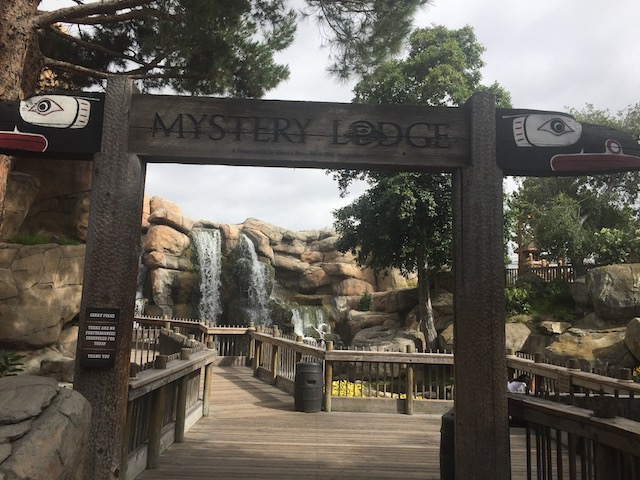
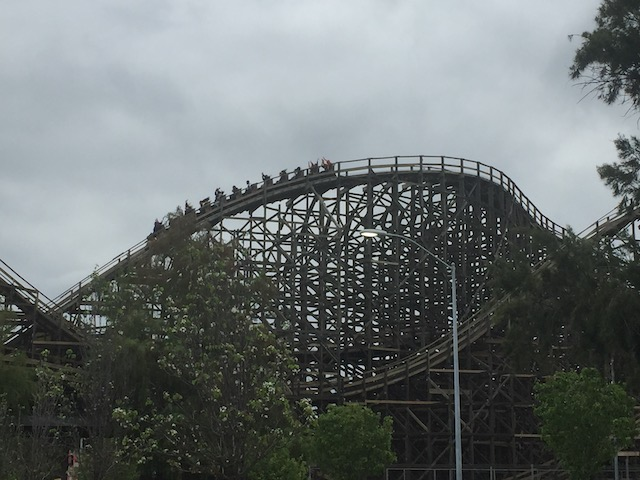
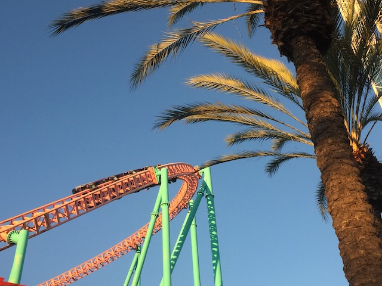

| |
Knotts Summer 2019
All right. Time for another update. This one happens to be our Knotts Berry Farm update. As usual, we took a lot of visits to Knotts Berry Farm. Dating someone who works at the park will definetly get you a lot of visits. Let alone also being a coaster enthusiast who runs a coaster website on top of that. And dating an employee has its perks. Like being able to get into special employee parties. Visit #1.
Nah. I may be a big outdoors person, but...never mind. I'm sure plenty of true hardcore outdoor people would scoff at my hiking and cliff jumping.
We arrived too early to get into the event but too late to explore the park for the day? OH FUDGE!! No, I'm not saying fudge as a euphimism for f*ck (I don't do that), eating fudge is literally a good way to kill time.
PETA does not approve of the frog being forced to spit out water for its entire stone life. >=(
God damn it! Another federal government building just opened up across the street!
Hey all Knotts employees! Get in a big line! Surprise drug test!
Who knew that generic theme park pizza was so popular.
Come on Knotts. I know you can make better pizza than this. I've seen what you do for the Boysenberry Festival.
 All right. We've had enough browsing around and eating crappy pizza. Let's go ride a roller coaster!
All right. We've had enough browsing around and eating crappy pizza. Let's go ride a roller coaster!
 You know. HangTime is fun. But....it was not a smart idea to wait 30 minutes for it. And this was one of the shorter lines that tonight produced.
You know. HangTime is fun. But....it was not a smart idea to wait 30 minutes for it. And this was one of the shorter lines that tonight produced.
Enjoying the view of all the L.A smog? >=)
 You know, the Knotts Employee parties don't even really feel like the employee parties that I went to back when I worked at SFMM. If anything, this reminds me far more of those AAA Nights that SFMM hosts and that I went to a couple of times.
You know, the Knotts Employee parties don't even really feel like the employee parties that I went to back when I worked at SFMM. If anything, this reminds me far more of those AAA Nights that SFMM hosts and that I went to a couple of times.
But hey. The party still does have its perks. Like free ice cream for one thing.
 Love the pretty lights on HangTime.
Love the pretty lights on HangTime.
Hey guys! Let's ride Ghost....Never mind.
Now this is a sport that I can see most Americans getting into. ;)
Winner doesn't have to pay for their pie. Everyone else, hope you have your wallets open and ready.
Waveswinger shining and glittering in the moonlight.
Worst ride on Sierra Sidewinder ever. >=(
Visit #2. "Shh. I'm actually a chicken. I'm just disguised as a duck so I can survive Mrs. Knotts"
Eh. Ghostrider being closed is a bummer. But I come here all the time. And Ghostrider is not the reason for today's visit.
Nope. We're here today to check out Calico River Rapids.
So Calico River Rapids is essentially Bigfoot Rapids, only it got a big makeover for 2019.
It may be far from the best rapids ride ever, in fact, I can think of 2 better rapids rides in California alone. But it still is a lot of fun, and is a big improvement from Bigfoot Rapids, and is a great fit for Knotts Berry Farm.
Hey look! They added a geyser to Calico River Rapids!
 "This ride never got me wet when it was Bigfoot Rapids. But maybe as Calico River Rapids, it'll actually splash you a bit!" (Spoiler Alert: Nope)
"This ride never got me wet when it was Bigfoot Rapids. But maybe as Calico River Rapids, it'll actually splash you a bit!" (Spoiler Alert: Nope)
All right. New resteraunt credit. We're checking out Portillos. It's a hot dog chain, but as its primarily a Midwestern chain, I never really heard of it as this is one of their few CA locations. It's no Nathans Hot Dogs, but still a good place.
 Visit #3. I know that was a super short mini-update. Just me going over Calico River Rapids. But hey. Moving on.
Visit #3. I know that was a super short mini-update. Just me going over Calico River Rapids. But hey. Moving on.

Sad news for those of you who like more of the unique stuff and cultrual stuff at Knotts. They're taking out Mystery Lodge. A mild bummer as it was certainly something unique, but...I'd be lying if I said that this was something that I was gonna really miss and something that I always made sure to do when I visited Knotts.
Smallpox killed the Mystery Lodge.
Ooh! Looks like we've got ourselves a chase going on at Calico River Rapids!
Hmm. They changed the show in the Charles Schultz theater.
OK. So Beach Blanket Beagle is a completely different show. For one thing, they completely axe all the other Peanuts characters, and instead, they're all replaced with the cast of a terrible 70s Beach Movie, only with Snoopy thrown in.
 The story of this show is this group of surfer teens and Snoopy have to get some money man, because the big bad government is gonna destroy their totally tubular beach because greedy assholes they are! It's stupid, it's cliched, and yet....I can't help but laugh and enjoy how cheesy and terrible this is. =)
The story of this show is this group of surfer teens and Snoopy have to get some money man, because the big bad government is gonna destroy their totally tubular beach because greedy assholes they are! It's stupid, it's cliched, and yet....I can't help but laugh and enjoy how cheesy and terrible this is. =)
We need to up the adult appeal of our Snoopy show! Get rid of the rest of the Peanuts characters and show the replacement cast undressing in as family-friendly a way as possible. =P
And if all else fails, just take a page from the Six Flags playbook and "JUST ADD FIRE!!!".
I really had Fun! Fun! Fun! watching this show. Though probably not for the reasons the writers and performers had in mind lol.
Hey look. Knotts guests are finally starting to show some good taste.
 OK. So Knotts Summer Nights was a thing going on for the summer. It's kind of like Boysenberry Festival, as they saw how popular that is and how big a success that is. So they tried repeating that and having a food festival for their summer foods. Problem is....it's all just standard food. The Boysenberry Festival works as....it's got a consistant theme. Boysenberries. And they get real creative with it. This....just felt too standard. Granted, I never tried it. But....it just didn't seem worth the price.
OK. So Knotts Summer Nights was a thing going on for the summer. It's kind of like Boysenberry Festival, as they saw how popular that is and how big a success that is. So they tried repeating that and having a food festival for their summer foods. Problem is....it's all just standard food. The Boysenberry Festival works as....it's got a consistant theme. Boysenberries. And they get real creative with it. This....just felt too standard. Granted, I never tried it. But....it just didn't seem worth the price.
So remember boys and girls. If you see a random berry stand on the side of the road while driving, stop and check it out. It may just become a big theme park 100 years in the future. ;)
OK. We've had enough shows and silly fun. Let's get in some coaster action since we are IncredibleCOASTERS.
You know, ever since Ghostrider got retracked by GCI, it's been smooth as glass.

Still one of the better wooden coasters out there, and I can think of several other woodies that could really use some of that GCI love.
Hmm. Trying something new from Mrs. Knotts.
Nice cock photo Knotts. One of these days, I'll manage to frame a photo of my own cock.
All right. Visit #4. Now this visit was on the 4th of July. It pretty much boiled down to Jason has to work on the 4th of July. Meh. Might as well just spend the day here and ride some rides until he gets off and we do something later that night. Oh, and another random cock photo.
Phew. I was worried that the 4th of July would be a busy day. But so far, everything seems fine.
OK. Everything was open 5 minutes ago! But first Xcelerator suddenly closed, then Supreme Scream, and now HangTime!? What the hell is going on!?
Well, turns out that I was at the park when a big earthquake occured. Kind of shocking as this was actually a freaking 7.0, and I felt NOTHING!!! OK, I felt minor shaking during one of the aftershocks the next day. But the initial quake, I felt NOTHING. Thank god this was in the middle of nowhere California, cause if a quake of this size occured right in the middle of LA, things would've been bad. But here, there was no damage and EVERYTHING opened back up within 20 minutes.
Oh crap. It really seems like the park suddenly got much more crowded.
F*CK!!! It is WAY too crowded today. But....I have time to kill. *Sigh* Looks like today is gonna be spent listening to podcasts and watching Youtube videos, with the occasional ride sprinkled in.
OK. Time for an Incrediblecoasters Ran...Actually no rant. I'm gonna do an Incrediblecoasters Suggestion instead as I want a solution and not to just bitch on my website. There's enough bitching and drama in the roller coaster community as it is.
So Knotts, like most establishments these days, has their own WiFi since....welcome to the 21st Century. That's great. However, while this is appreciated, I have had nothing but trouble using the WiFi here. Everytime I connect to the Knotts WiFi, my phone pretty much grinds to a HALT. I can't do ANYTHING when connected to KBF_Guest_WiFi. Seriously, if I try to even freaking load a friends Facebook post, it'll load and buffer for 30 minutes. Hell, even after an hour, still nothing! It just freezes up! And it's not just a fluke. I have NEVER been able to do ANYTHING on Knotts WiFi. So I always have to disconnect from the WiFi and just use data (Ugh) if I want to do anything while at Knotts.
I'm not sure if I'm the only person who has this problem and the WiFi is fine for everyone else or if it really is just terrible WiFi. But I do feel like having better WiFi is something that Knotts should try and fix. I'm not sure if their WiFi is overloaded from simply too many people using it or what. But...I would like for someone to look into it and see what they can do so that I can check email on Knotts WiFi. That would be appreciated. Thank you
OK. So for actually spending the 4th of July together, we essentially decided to just go a local park in the Anaheim and just watch fireworks that way. Both the professional shows from places like Knotts and Disneyland, as well as just some random sh*t that people are blowing.
"You can claim whatever you want. But you all know that this whole day is just an excuse to take off work, get drunk, and blow sh*t up."
Visit #5. So Timber Mtn Log Ride's 50th Birthday is today. And while I'm not normally the one to show up for a Birthday Party, screw it! It's Timber Mtn Log Ride. Let's go and support one of our favorite water rides.
The ghost of Mystery Lodge still lingers on at Knotts Berry Farm.
 Anyone want some saltwater taffy?
Anyone want some saltwater taffy?
Sup bitches. Oh, we did nothing important. Just invented a new freaking berry. What have you done to better the world other theme parks?
Is the jackass in front of or behind the camera?
There seems to be something brewing down in Ghost Town.
Unless you're talking about a communist catgirl, I'm not interested.
A-ha! I knew it! These people don't care about the wagon show! They just want to be sprayed when the water stunt is done!
All right. Time for the whole reason we came to Knotts Berry Farm today.
So one of the new parts of Timber Mtn Log Ride's rennovation is that it got new logs. They look nicer at first glance, fancier, shiner, the new headrests look cool. But....they reduce the capacity of the ride. And on busy summer days, that quickly becomes a problem.
Still one of the best water rides out there.
Congratulations. Here's to 50 more years of "SIT DOWN!!!!". =)
Visit #6. All right. You wanna relax? The train at Knotts is a good way to do so.
There has been a decapitation at Knotts Berry Farm (I'm sorry, I'm stealing this quote from one of my friends. Decent joke at first, but the fact that there were people who seriously thought that someone got decapitated on Montezoomas Revenge after hearing that that makes it f*cking hilarious).
Montezoomas Revenge got an ACE plaquard. Probably cause they know how all the Shuttle Loops are dying off, and they're trying to bribe Knotts into keeping theirs.
Though seriously. Thanks for maintaining Montezoomas Revenge. It's still a really fun ride to this day.
 Much better ride on Sierra Sidewinder. =)
Much better ride on Sierra Sidewinder. =)
 And finally, we're on Visit #7. This also happens to be our Soak City (and water park) visit for the year.
And finally, we're on Visit #7. This also happens to be our Soak City (and water park) visit for the year.
Hmm. Which color should we do of Shore Break this year?
Not the most intense water slide complex out there, but it's still a ton of fun.
Wanna make this water slide more fun? Let's bet money on this water slide race.
So McDonalds is having this special promotion where they're offering some international products here in America for a limited time. This is fine and all. Except....they didn't bring the Gran Garlic Pepper Burger from Japan! COME ON!!! The Grand McExtreme Burger from Spain was good, but....the Gran Garlic Pepper Burger is the the best item from the McDonalds menu. Please bring that to America.
 OK. We've gone WAY too long without discussing the star attraction, Xcelerator.
OK. We've gone WAY too long without discussing the star attraction, Xcelerator.
 I know people complain that the overbanked turns after the top hat are mostly fluff. And....yeah. It's true. But....I'll take the fluff overbanked turns over drop into the brake run on Top Thrill Dragster or a bunny hop brake run like on Kingda Ka.
I know people complain that the overbanked turns after the top hat are mostly fluff. And....yeah. It's true. But....I'll take the fluff overbanked turns over drop into the brake run on Top Thrill Dragster or a bunny hop brake run like on Kingda Ka.

And even after riding better coasters, the launch still packs a punch.
I see someone forgot to clean up all the stuff from Shadowlands from last years Knotts Scary Farm.
And we end this update with Sol Spin. Not the best Top Scan ever, but still a lot of fun. Looking foreward to having a lot more fun at Knotts Berry Farm later on.
Home
|